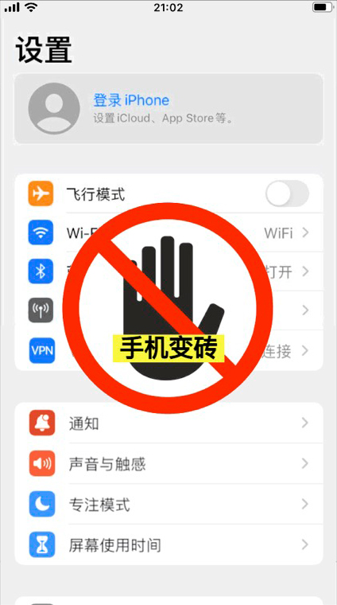
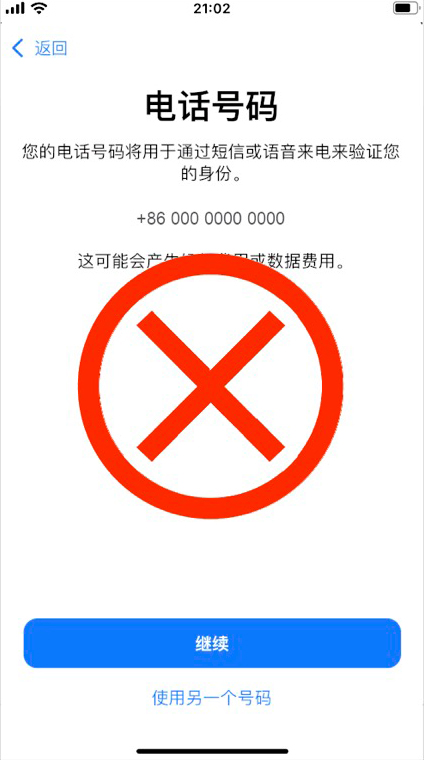
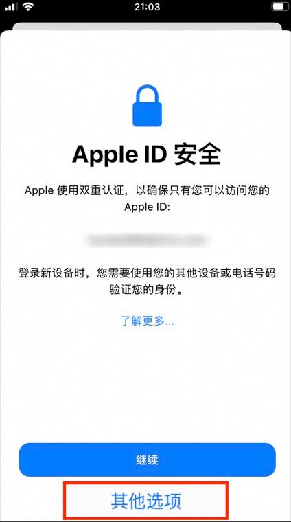
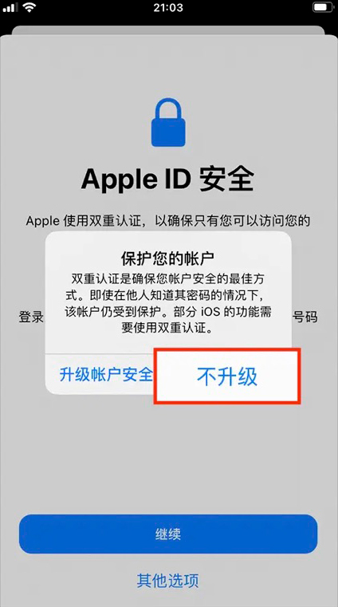
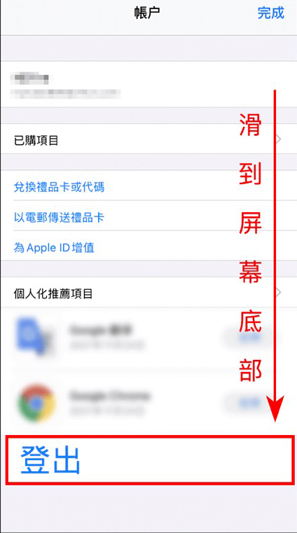

使用公开账号下载
注意1
千万别在 iCloud 页面和设置页面登录!这会导致您的App Store 和 iTunes Store 被停用 或 锁定，最严重会导致“手机会变砖”

注意2
若提示需要 电话号码验证，代表您操作错误，请仔细查看教程的第三步与第四步

第一步:
打开 App Store ，点击<右上角图标>;千万别
在 iCloud 页面和设置页面登录！否则“手机会变砖”;
，点击<右上角图标>;千万别
在 iCloud 页面和设置页面登录！否则“手机会变砖”;

第二步:
选择<退出登录>记得一定要滑倒页面底部才能看到;

第三步:
登录ID后，会弹出AppleID安全页面，切记，请点击<其他选项>若没有此提示请忽略；

第四步:
在弹出的弹窗中选择<不升级>，若没有此提示请忽略;

第五步:
使用下方的<公共香港 Apple lD>按照前面的四个步骤进行登录，注意密码大小写，建议直接复制粘贴；
获取公开Apple ID(请使用美国ID)(若发现公共Apple ID都不可用，请联系在线客服获取最新ID)
第六步:
最后一步:
下载完成后，在 App Store 中点击<右上角图标>然后<滑倒底部>登出账号;
登出公共 ID 后，登录回自己的苹果ID，商店内容即可变回简体内容。

注:若您在下载过程中有任何问题，随时联系在线客服，我们会有专业的客服团队帮助您解决任何问题。